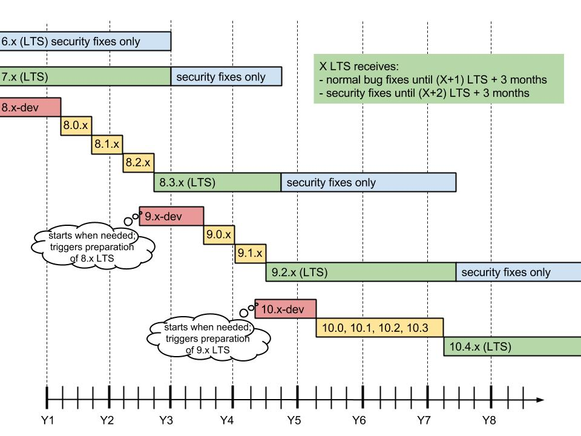
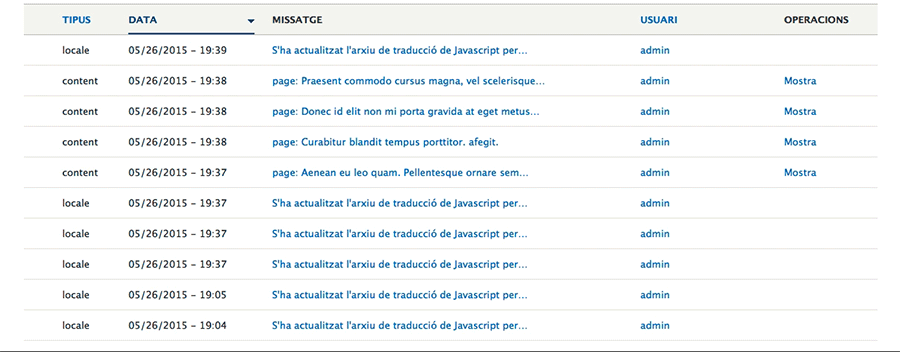
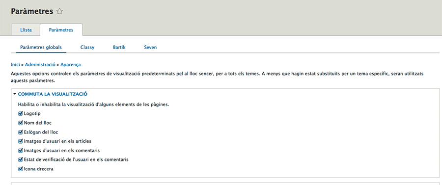
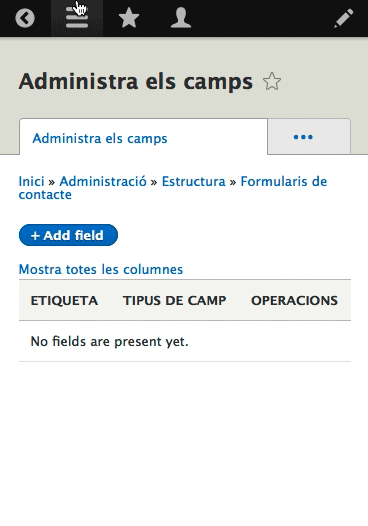
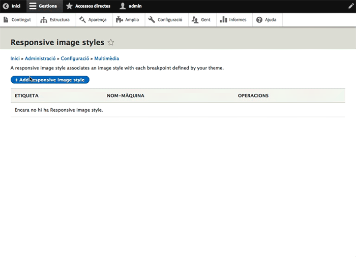

Cristina Chumillas
Designer and frontend developer at Ymbra
Drupal
Drupal timeline
Drupal 8.1
Mobile First
Tractament responsive a tots els elements
Themes, imatges, taules…
Administració
Mobile-friendly toolbar
Breakpoints
bartik.breakpoints.yml
bartik.mobile:
label: mobile
mediaQuery: ''
weight: 2
multipliers:
- 1x
bartik.narrow:
label: narrow
mediaQuery: 'all and (min-width: 560px) and (max-width: 850px)'
weight: 1
multipliers:
- 1x
Responsive images
Responsive images

New theme system: Twig
<?php
/**
* @file
* File description
*/
?>
{#
/**
* @file
* File description
*/
#}
Theme Responsively
themes can now declare Breakpoints (the height, width, and resolution at which a design changes to meet shifting browsers and devices) which can be used by these various responsive features.
Front-end performance
high-performance settings enabled by default. One of the biggest factors that can make or break the mobile experience is the raw performance of a website. As a result, lots of work has been done in Drupal 8 to minimize its front-end footprint. For example, in many cases, jQuery was swapped out for native JavaScript, and out of the box Drupal 8 loads zero JavaScript files for anonymous visitors. Additionally, JS-intensive features such as the Overlay module have been removed in favour of lighter-weight alternatives that are mobile friendly.
New front-end libraries and helpers
For example, Modernizr (which makes it easy to detect if a browser supports touch, or HTML5/CSS3 features), Underscore.js (a lightweight JS helper library), and Backbone.js (a Model-View-Controller JavaScript framework).Jquery Jquery UI
HTML5
All of Drupal's output has been converted to use semantic HTML5 markup, as opposed to XHTML in Drupal 7. date, tel, and email (which can provide targeted user interfaces on mobile devices (for example, only showing the number pad on phone numbers)
Native Schema.org output
In a great boon for search-engine optimization, Drupal 8's RDFa module now outputs schema.org markup.
Even more improved Accessibility
Drupal 8 makes extensive use of WAI-ARIA attributes to provide meaning on rich front-end applications such as the in-place editor and responsive toolbar.
R.I.P. IE 6, 7, and 8
Drupal 8 core has officially dropped support for IE 6, 7 and 8, enabling the use of jQuery 2.0 and other code that assumes modern HTML5/CSS3 browser support.
In-place editing
Enter Drupal 8's new in-place editing feature, which allows editors to easily click into any field within a piece of content and edit it right on the front-end of the site, without ever visiting the back-end form.